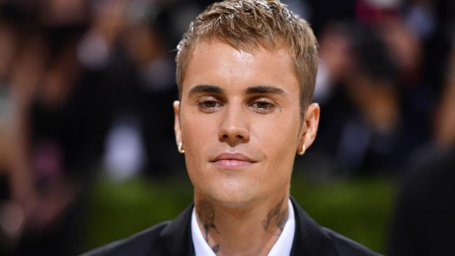

| BERITA | GALLERY | Hubungi Kami |
|
|
Viral Rihanna Hamil Besar, Makan Mangga Dicelup Air Laut, Ngidam?Rihanna punya cara tersendiri untuk menikmati buah-buahan. Sebelum mengonsumsinya, ia akan mencelupkan buah di air laut. Kebiasaan tersebut bahkan tetap dilakukan penyanyi yang juga pengusaha kosmetik itu meski sedang berbadan dua. Sebuah unggahan yang viral di Twitter memperlihatkan foto-foto Rihanna yang sedang hamil besar sedang berada di pinggir laut Barbados sambil menyantap buah mangga. Sebelum memotong mangga dengan pisau yang dibawanya, pelantun 'We Found Love' itu terlihat mencelupkan buah tersebut di air laut. "Itu tidak sehat sama sekali. Aku paham itu tradisi Caribbean, tapi itu sangat berisiko," komentar sebuah akun di Twitter. "Coba tengok bahan-bahan makanan yang ada di makanan, serta obat-obatan yang disuntik ke dalam daging. Lalu pikirkan lagi apa yang berisiko," balas seorang fans yang membela Rihanna.
Kepada Vogue baru-baru ini, Rihanna sempat berbicara soal ngidam makanan tertentu saat hamil. Salah satunya kuliner khas negara asalnya, Barbados, yakni segala buah-buahan yang diasinkan dengan air laut. Istri Hamil Menangis Jam Tiga Pagi Mengidam Pengen Naik UFO Kisah seorang pria yang membagikan pengalamannya dalam memenuhi keinginan istrinya saat usia perut sudah masuk minggu ke-37 kehamilan. Kisahnya tersebut kemudian menjadi viral dan banyak membuat warganet terheran-heran dan mau tertawa. Hal yang membuat banyak warganet bersikap demikian karena pria yang tidak disebutkan namanya ini mengatakan kalau istrinya yang sedang hamil mengidam ingin naik UFO. Dan istrinya meminta dirinya menuruti keinginannya saat pukul 3 pagi. Pada awalnya setelah mendengar permintaan istrinya tersebut, pria ini hanya menganggap kalau istrinya sedang bercanda.
“Aku tertawa saja, malam itu aku terkejut melihatnya menangis saat pukul 3 pagi. Aku kira dia sakit perut atau mau melahirkan.. Setelah aku tanya sebab dia menangis karena aku tertawakan dia pada sore itu (mau naik UFO),” kata pria itu, dikutip bebaspedia dari cempedakcheese.com, pada Senin (11/01/2021). “Setelah itu, dia pergi ke rumah emaknya, dia ceritakan pula keinginannya sama emak dan adiknya, orang rumah langsung tertawakan dia. Jadi, saat malam itu akulah yang dipujuk,” tutur pria itu dalam unggahan Facebook Info Ibnu Hamil. Melihat setiap malam istrinya bermimpi naik UFO, pria ini akhirnya memiliki ide dengan mengatakan kalau permintaan tersebut sulit untuk dipenuhi. Alasannya karena tidak tahu kapan ‘kapal angkasa’ itu akan datang ke bumi. Pria ini kembali mencoa membuatnya istrinya mengerti, dia kemudian memberitahu mengenai permintaan istrinya itu kepada ibunya. Mencari ide untuk memenuhi keinginan istrinya untuk naik UFO. “Esoknya, aku ajak dia pergi ke Tesco untuk belanja barang dapur. Di tempat itu ada tempat bermain, aku tanya dia mau naik UFO yang mainan itu gak? Dia pun mau, aku terus pergi beli token,” lanjutnya. “Tidak pernah lupa sampai sekarang ekspresi dia saat naik mainan itu.. Dia terlihat sangat gembira. Saat itu, banyak orang yang melihatnya. Malu nggak malu hajarlah. Alhamdulillah, setelah itu dia sudah tidak berkata lagi ingin naik UFO,” akhirnya. Justin Bieber Resmi Konser di Indonesia 3 NovemberJakarta, CNN Indonesia -- Justin Bieber resmi bakal konser di Indonesia dalam gelaran Justice World Tour pada 3 November 2022 di Stadion Madya Gelora Bung Karno, Jakarta. Pengumuman itu disampaikan oleh Sound Rhythm yang bekerja sama dengan AEG Presents dan PK Entertainment yang memboyong musisi Amerika Serikat tersebut kembali ke Jakarta setelah lebih dari sedekade. "Dengan gembira kami umumkan bahwa @justinbieber akan kembali ke Indonesia bersama @justicetour pada 03 November 2022 di Stadion Madya, Gelora Bung Karno!" tulis unggahan pada Kamis (24/3) pagi tersebut. "Tiket akan mulai dijual pada pukul 10.00 WIB pada tanggal 29 Maret 2022 di www.justinbieberinjakarta.com" lanjutnya. Dalam unggahan tersebut juga tercantum layout konser dan delapan kategori tiket yang dijual. Tercatat, tiket konser Justin Bieber dijual mulai dari Rp1,5 juta hingga Rp8,5 juta. Rinciannya adalah CAT 5 seharga Rp1,5 juta, CAT 4 seharga Rp2,4 juta, CAT 3 Rp3,4 juta, CAT 2 seharga Rp4,4 juta, CAT 1 seharga Rp6 juta, HOLD ON VIP PACKAGE seharga Rp5,25 juta, PEACHES VIP PACKAGE seharga Rp6,25 juta, dan GHOST VIP PACKAGE seharga Rp8.5 juta. Bila penggemar ingin melihat Justin Bieber secara dekat, kategori CAT 1 adalah yang paling dekat dengan panggung, diikuti dengan CAT 2 dan CAT 3. Disebutkan, kategori 1, 2, 4 disediakan tempat duduk.  Kabar kepastian ini menjawab sejumlah rumor yang beredar sejak beberapa hari lalu bahwa Justin Bieber bakal konser di Indonesia. Semua bermula dari unggahan salah satu akun penggemar Bieber di media sosial yang menyebut bahwa Bieber akan kembali ke Jakarta selama lebih dari satu dekade. "Justin Bieber kembali ke Jakarta, Indonesia setelah lebih dari sedekade pada 3 November 2022 untuk Justice World Tour. Detail lebih lanjut akan diberitahukan, segera mungkin," tulis akun JDBAnalytics pada Rabu (23/3). Selain itu, media musik asal Inggris, NME juga melaporkan hal serupa. Sebelum tampil di Indonesia pada 3 November di Gelora Bung Karno Madya Stadium, Bieber akan pentas di Kuala Lumpur pada 22 Oktober. Setelah Malaysia dan Indonesia, Bieber akan langsung ke Jepang. Tepatnya ia akan tampil pada 9 November di Nagoya, 12 November di Osaka, dan 16-17 November di Tokyo. Namun menurut situs resmi Justin Bieber yang diakses CNNIndonesia.com pada Kamis (24/3) pagi, bahkan setelah pengumuman ini disampaikan, belum ada nama Indonesia dan Malaysia sebagai lokasi tur Justice World Tour. Dalam situs resmi, Justin Bieber tercatat akan tampil di Tel Aviv, Israel pada 13 Oktober 2022 sebelum muncul di Nagoya pada 9 November 2022. Justice World Tour dari Justin Bieber adalah tur dunia untuk mempromosikan album keenam dari suami Hailey Baldwin tersebut, Justice. Sebelum menyelenggarakan Justice World Tour, Justin Bieber semula akan menggelar Changes Tour untuk mempromosikan album kelimanya, Changes. Tur tersebut semula dijadwalkan dimulai pada14 Mei 2020 di Seattle, Amerika Serikat. Namun kemudian ditunda karena pandemi Covid-19. Lalu Bieber memutuskan mengganti namanya menjadi Justin Bieber World Tour. Namun rencana itu kembali batal karena situasi pandemi yang belum juga stabil di berbagai lokasi tujuan konser. Hingga kemudian, Justin Bieber merilis album keenam, Justice, pada 19 Maret 2021. Situasi pandemi yang mulai mereda di berbagai tempat menjadi kesempatan Bieber untuk mengadakan tur untuk album ini. Sehingga, Justice World Tour bukan hanya sekadar tur untuk mempromosikan album Justice, melainkan juga 'gabungan' dari dua konser yang batal digelar sebelumnya. |